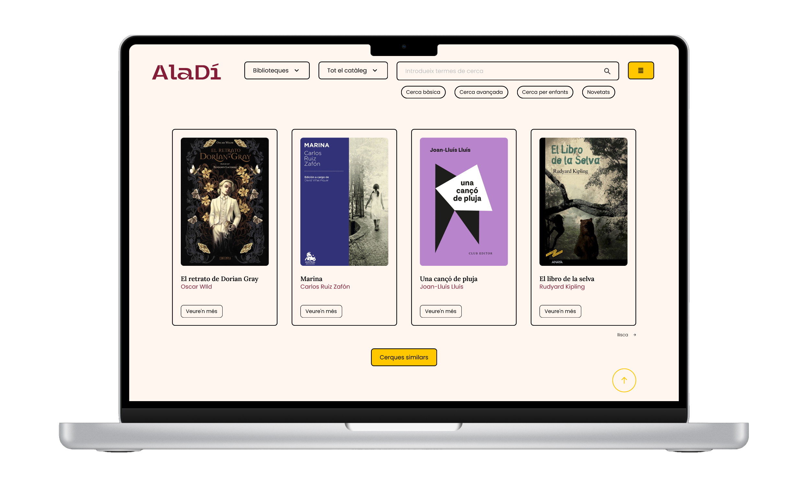
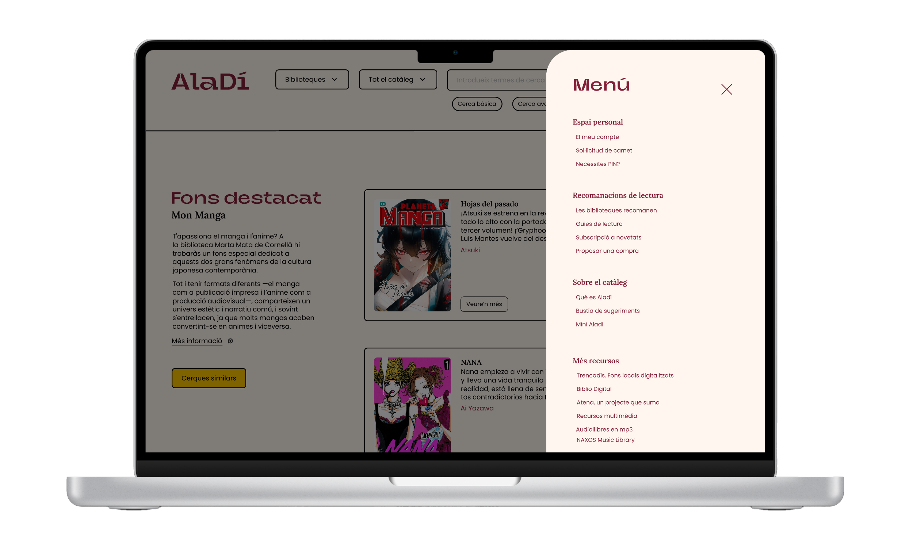
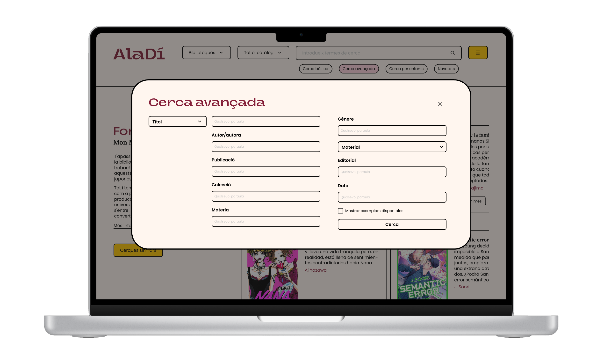
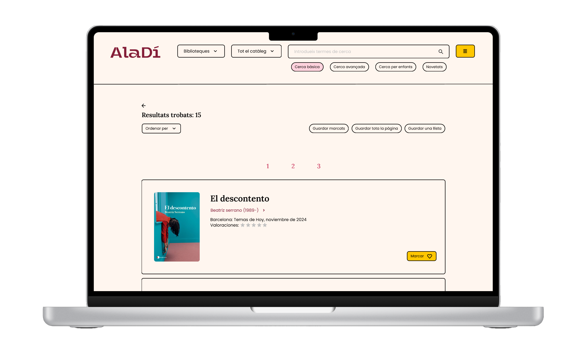
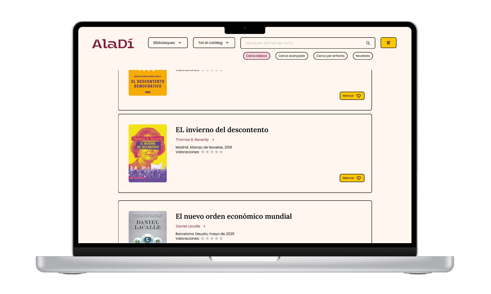
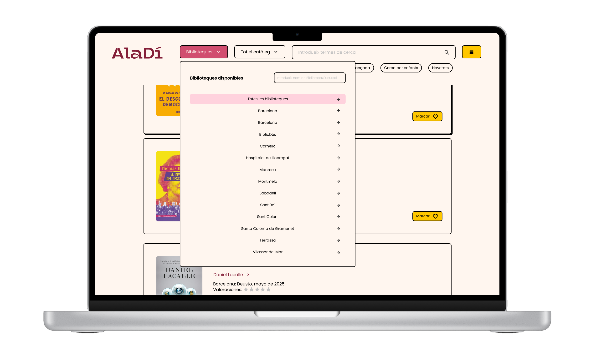

Propuesta de rediseño del catálogo en línea de la red de bibliotecas municipales de Cataluña, con el objetivo de mejorar la experiencia del usuario mediante una interfaz más intuitiva y atractiva. El diseño se centra en la accesibilidad, la facilidad de navegación y la presentación clara de la información, facilitando a los usuarios la búsqueda y el descubrimiento de recursos disponibles en las bibliotecas. Se busca transformar el acceso a la cultura y el conocimiento en una experiencia vibrante, directa y accesible, eliminando las barreras visuales de los catálogos tradicionales para conectar a la comunidad de Cataluña con el fondo bibliográfico de una forma honesta y contemporánea. De este modo se consigue que un catálogo bibliográfico —históricamente aburrido y complejo— se sienta como una aplicación moderna de suscripción o una revista de arte.